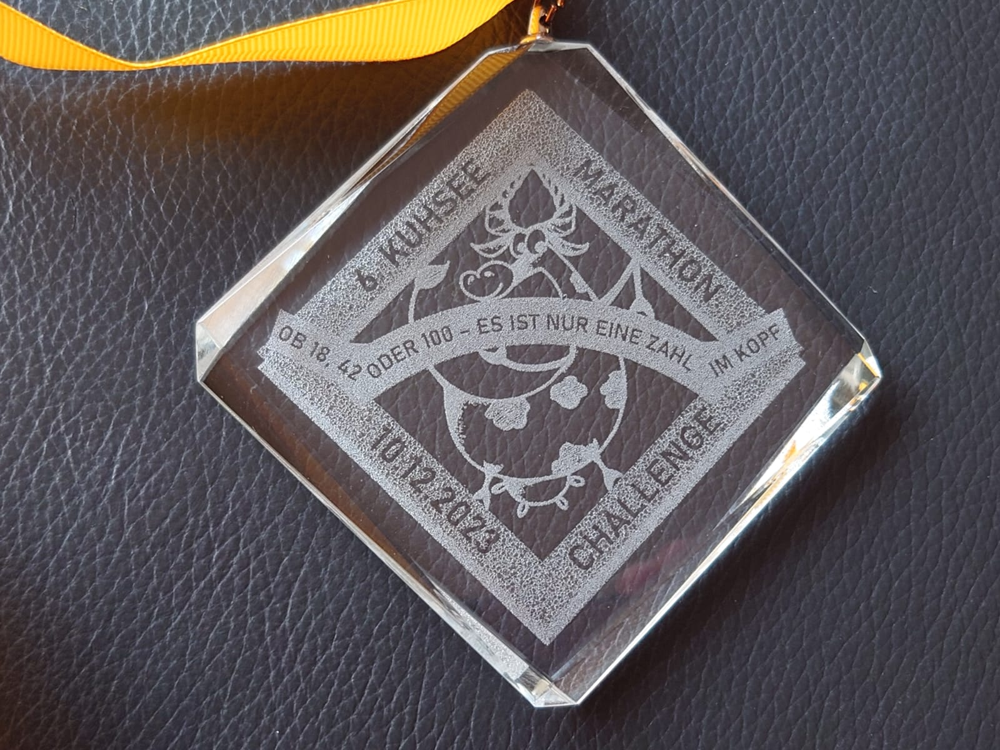
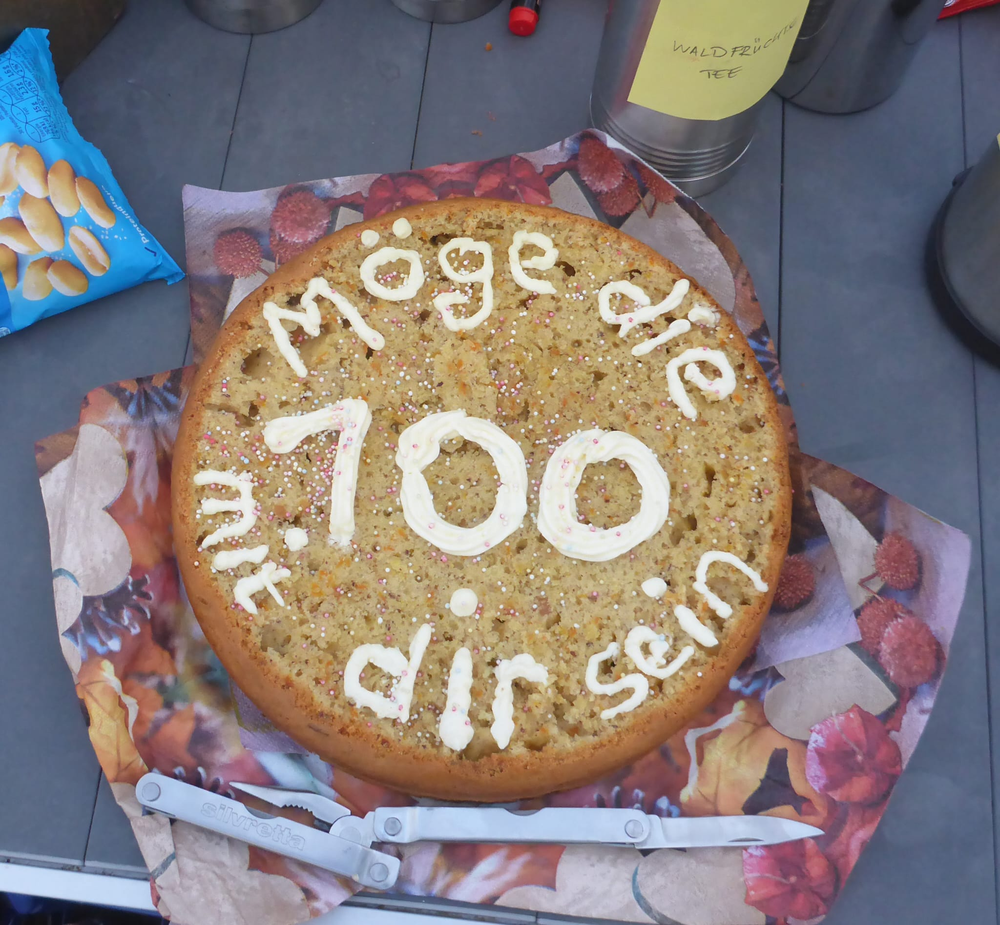
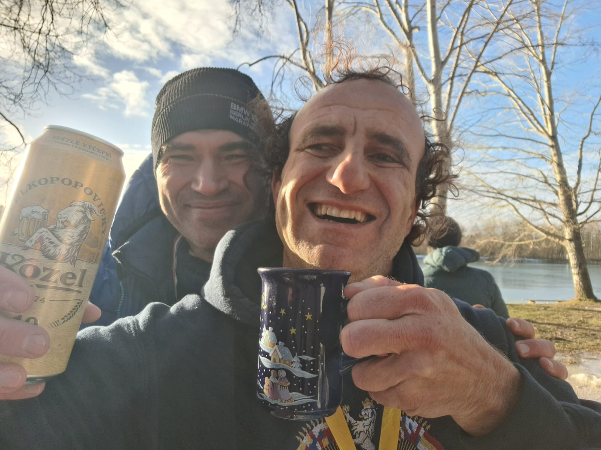

Kuhsee Marathon Challenge
Regeln
Die grundlegenden Ideen der Kuhsee Marathon Challenge sind:
es gibt keine Starterliste,- es gibt kein Startgeld,
- es gibt keinen ersten und keinen letzten Läufer,
- es gibt keine Cut Offs und kein DNFs.
Jeder kann zum Start kommen, jeder kann probieren die 18 Runden zu meistern. Und wenn es auch nur 9 Runden sind, soll keiner enttäuscht sein. Die Möglichkeit die wunderbaren (Nichtläufer sagen die Verrückten) Menschen kennenzulernen, neben einem Läufer zu laufen, der schon mehrere Marathons gelaufen ist oder neben einem Marathondebütant, nette Gespräche zu führen, zusammen die Tiefs und die Hochs zu erleben – ist einfach unbezahlbar.
Ausschreibung 7. KMC
- Die 7. Ausgabe der legendären Kuhsee Marathon Challenge findet am 01.12.24 um 9:00 Uhr statt. Der Start ist am Kiosk "Pier 3 am Kuhsee" bei den Tischtennisplatten.
- Ein Parkplatz (Zufahrt über die Mittenwalder Str.) ist kostenlos und in unmittelbarer Nähe zum Kiosk (100 Meter) vorhanden.
- Das Orgateam bietet dieses Jahr die KMC-Anmeldung über race result unter https://my.raceresult.com/293217/registration an. Die Anmeldung für die Läufer ist kostenlos. Bei der Benutzung des Portals fallen jedoch pro Läufer entsprechende Gebühren an. Aus diesem Grund ist die Teilnehmerzahl auf 50 begrenzt. Läufer werden gebeten, sich nur dann anzumelden, wenn sie sicher bei KMC teilnehmen wollen oder können. Falls die Teilnahme aus irgendwelchen Gründen nicht möglich ist, bitten wir darum, sich sofort abzumelden, damit die Plätze wieder frei werden.
- Die KMC ist gefinished, wenn man volle 18 Runden um den Kuhsee gelaufen ist. Eine Runde ist ca. 2,4 km lang und man läuft insgesamt ca. 43,2km. Die 42 km Marke ist kein Finish und liegt sowieso auf der anderen Seite des Sees.
- Die Läufer, die früher oder später fertig sind bitten wir, einen Link oder ein Screenshot von dem Ergebnis an mailto:kuhsee.marathon.challenge@gmail.com zu schicken.
- Jedes Jahr wird für alle Finisher eine besondere Medaille angeboten. Da die Anzahl der Finisher erst nach dem Lauf bekannt wird, werden die Medaillen erst danach produziert. Wie es sich aber bereits im letzten Jahr bewährt hat, wird versucht für die auswärtigen Läufer eine begrenzte Anzahl der Medaillen vorzuproduzieren. Die Augsburger bekommen die Medaillen beim nächsten gemeinsamen Lauf. Die Kosten und das Aussehen der Medaille werden nach dem Lauf bekannt gegeben (eventuell zw. 12 € und 15 €).
- Bei der KMC ist Eigenverpflegung angesagt. Ein Biertisch zum Abstellen des Proviants wird organisiert. Ein Laufrucksack ist auch eine gute Alternative.
- Die Laufstrecke teilen wir gerne mit den Spaziergängern, auf die wir gerne Rücksicht nehmen. So können wir alle eine stressfreie Veranstaltung und einen schönen Sonntag am Kuhsee genießen!
- Es sind insgesamt 3 öffentliche Toiletten auf der Strecke vorhanden, wobei mindestens eine (bei der Wasserwacht) sicher auch im Winter geöffnet bleibt.
- Bitte nehmt genug warme Sachen für "nach dem Lauf" mit. Erfahrungsgemäß haben wir kühleres Wetter bei der KMC 😉
- Seit 2022 wird die KMC nach Zählordnung des 100 Marathon Club Deutschland e.V. durchgeführt und kann dort anerkannt werden.
- Die digitalen Urkunden werden zeitnah nach dem Lauf auf der Ergebnisseite von race result veröffentlicht.
- Die Teilnahme erfolgt auf eigenes Risiko. Der Organisator übernimmt für Unfälle und Verletzungen aller Art sowie Diebstahl oder sonstige Schäden keine Haftung. Die Läuferinnen und Läufer versichern, dass sie gesund sind und unter Beachtung ihrer Leistungsfähigkeit am Lauf teilnehmen. Daten und Fotos, die im Zusammenhang mit dem Lauf stehen, können ohne Vergütungsanspruch genutzt werden.
Dieter und Frank wünschen Euch allen einen verletzungsfreien und unvergesslichen Lauf!
Letzte Infos vor der 7. Kuhsee Marathon Challenge
- Aufgrund der hohen Starteranzahl, möchten wir euch einen zusätzlichen Start (Elite) um 8:00 Uhr anbieten. Frank wird vor Ort sein und den ersten Tisch am Kiosk "Pier 3" bereitstellen. Ich werde mit der Hauptstartgruppe um 9:00 starten.
- Die erste Runde startet traditionell im Uhrzeigersinn. Danach kann jeder beliebig die Richtung wechseln oder beibehalten.
- Bitte denkt daran Trinken und Essen für den eigenen Bedarf und warme Kleidung für "Nach dem Lauf" einzupacken.
- Herzlich Willkommen sind von euch mitgebrachte große Thermoskannen mit warmen Getränken, ein paar Tassen und Post-its mit "Zur gemeinsamen Nutzung" und Angaben über den Inhalt.
- Bitte die Tische, Stühle und die Strandkörbe von Kiosk "Pier 3" nicht benutzen. Wir möchten auch im nächsten Jahr unsere schöne KMC Geschichte weiterhin beschwerdefrei schreiben können.
- Beim Hauptstart und Gemeinschaftsfoto werde ich die diesjährige Medaille präsentieren. Es sind 25 Stück bestellt. Wie letztes Jahr, werden die auswärtigen Läufer nach 18 Runden (bitte nicht nach 42 km stehen bleiben, die Strecke ist ca. 43 km) die Medaille sofort erhalten. Die Augsburger Läufer werden entweder beim Silvesterlauf in Gersthofen oder bei einem privaten Läufchen mit Frank und/oder mir ihre wohlverdiente Medaille überreicht bekommen.
- Die Medaillenkosten liegen dieses Jahr bei 15 €. Der Betrag kann am 1.12 vor Ort oder per PayPal an dieterschaab@web.de (Family and Friends) überwiesen werden. Alle Spenden, die darüberhinaus gehen, werde ich auch wie letztes Jahr zweckgebunden spenden.
- Bitte bleibt gesund und entspannt. Es ist kein leistungsorientierter Wettbewerb. Kommen, Spaß haben und eine schöne Zeit mit den nettesten Läufern verbringen.
Geschichte
Der 6. KMC
 Die sechste Edition der KMC am 10.12.2023… ein Großereignis der Superlative, stand unter dem Motto:
{kind=link}
Ob 18, 42 oder 100 – es ist nur eine Zahl im Kopf 1!
Was ja alle schon ahnten, Dieter konnte erfolgreich seinen hundertsten Marathon laufen und ist nun offiziell stolzes Vollmitglied im 100 Marathon Club Deutschland e.V.. Viele haben mitgeholfen, ein besonders Finale vorzubereiten, sogar das Wetter hat an diesem Sonntag gut mitgespielt. Bei Temperaturen im hohen einstelligen Bereich ließ sich die Sonne immer wieder zwischen den Wolken blicken und bescherte Dieter punktgenau einen Zieleinlauf unter blauem Himmel. Bei musikalischer AC/DC Untermalung und eingerahmt von zwei Leuchtfackeln lief Dieter durch das Zielband und nahm einen Pokal, die 💯 MC Medaille und das gelbe Mitgliederband in Empfang.
 Besonders schön war, dass auch Dieters Familie mitgefeiert hat und er von seiner Frau, den Kindern und Eltern im Ziel empfangen wurde. Vor allem diese Unterstützung macht so ein Erfolg erst möglich.
Abschließend wurde dieser grandiose Meilenstein in Dieters leidenschaftlichem Läuferleben mit Kuchen (dank Sybille), Sekt und Bier gemeinsam gefeiert.
An dieser Stelle noch mal: Herzlichen Glückwunsch Dieter zu dieser phänomenalen Leistung.
Das war natürlich noch längst nicht alles. Es haben sich auch weitere Berühmtheiten dazugesellt.  So waren die lokalen Marathonlegenden Udo Pitsch, der schon 118 bei DUV gelistete Ultras und über 285 Marathons lief, sowie Bernie Manhard (119 Marathons, 55 Ultras) und Charly Berger (115 Marathons und 10 Ultras) mit dabei. Aber auch Viktor Reger, der sich anschickt 365 Ultramarathon in einem Jahr zu laufen und es damit auf 18250 km bringen will, ist ein Stück mit uns gelaufen. Und nicht zu vergessen Michael Turzynski aus Hannover, ein Mitbegründer des 100 Marathon Club Deutschland e.V. der sich das Ziel gesetzt hat 1000 Marathons zu laufen und beim 6. KMC seien 945-ten absolviert hat.
Wir hatten sogar zwei Marathon Debüts: Alexandra Greishei hat ihren ersten offiziellen Marathon gefinished (davor nur virtuelle) und Sebastian Mittomayer hat überhaupt seinen ersten Marathon gelaufen.
Mit einem Sprung ins Wasser haben sich Yvonne Kaleja und Frank Roland abgekühlt und das Eis des Kuhsees gebrochen.
Dieser Lauf ist mit insgesamt 25 Finishern, davon fünf Frauen, mit Abstand der teilnehmerstärkste Lauf bisher. Das Publikum war stark wie nie und hat mit Ratschen, Kuhglocken 🔔 läuten und Anfeuerungen für Stimmung gesorgt. Einen besonderen Dank an Peter Volk, der die Kuhglocke bereitgestellt und für zukünftige Veranstaltungen gespendet hat, an Simon Volk, für die Fackeln und den Pokal, an Yvonne Kaleja, die das Zielband gestaltet hat, und an Stefan Joos, der für die Musik gesorgt hat. Ein großes Lob auch an jeden, der dabei war und mitgelaufen ist, egal wie viele Runden: Ihr habt super durchgehalten, auch wenn manche Stellen auf der Strecke vereist waren.
Wer noch mehr erfahren möchte, Wilfried Matzke hat einen Artikel in Sport in Augsburg verfasst.
Der 5. KMC
 Die fünfte Edition der KMC am 11.12.2022 war wieder ein Erfolg: 1 Finisherin + 14 Finisher!
Die fünfte Edition der KMC am 11.12.2022 war wieder ein Erfolg: 1 Finisherin + 14 Finisher!
Ein weiteres Highlight der Challenge: Fabian, Peter und Michael haben KMC zu ihrem ersten Marathon gewählt und souverän abgeschlossen!
Dieses Jahr in Absprache mit 100 Marathon Club, wurde die KMC in die offizielle Liste der anerkannten Marathons aufgenommen. Also, Marathonsammler sind willkommen!
Das sind unerwartete und sehr erfreuliche Entwicklungen des Projekts KMC.
Hiermit möchte ich JEDEM und JEDER Danke sagen: Ihr seid unglaublich und Ihr macht diesen Lauf zu etwas Besonderem!
Dank Willfried Matzke haben wir einen kleinen, aber feinen Artikel in der #AZ, so dass viele Spaziergänger uns entgegen gelächelt und gefragt haben, ob wir "die Verrückten sind, die 18 Runden rennen wollen". Ich freue mich auf seinen Abschlussbericht in #AZ und Sport in Augsburg!
Eigentlich stelle ich keine Fragen am Ende der Story, werde mich aber freuen über neuen Ideen und Vorschläge für die Challenge. Was meint Ihr, was könnte die KMC noch besser und interessanter machen?
Medaillenfotos der älteren KMC


Finisher
| Nachname | Vorname | Summe | 2018 | 2019 | 2020 | 2021 | 2022 | 2023 | Urkunde |
|---|---|---|---|---|---|---|---|---|---|
| Berger | Charly | 2 | 1 | 1 | 2023 | ||||
| Bischoff | Rainer | 1 | 1 | ||||||
| Ecker | Fabian | 1 | 1 | ||||||
| Einmüller | Peter | 3 | 1 | 1 | 1 | 2023 | |||
| Gamperl | Elisabeth | 1 | 1 | 2023 | |||||
| Grashei | Alexandra | 2 | 1 | 1 | 2023 | ||||
| Grändorf | Dennis | 2 | 1 | 1 | |||||
| Hellmann | Carsten | 3 | 1 | 1 | 1 | ||||
| Jetzlsperger | Klaus | 1 | 1 | 2023 | |||||
| Joos | Stehpan | 3 | 1 | 1 | 1 | ||||
| Kaleja | Yvonne | 2 | 1 | 1 | 2023 | ||||
| Kliem | Manfred | 1 | 1 | ||||||
| Klinger | Thomas | 1 | 1 | 2023 | |||||
| Machel | Michael | 2 | 1 | 1 | 2023 | ||||
| Magg | Christoph | 5 | 1 | 1 | 1 | 1 | 1 | 2023 | |
| Manhard | Bernie | 1 | 1 | 2023 | |||||
| Mai | Sybille | 1 | 1 | ||||||
| Mayr | Richard | 1 | 1 | 2023 | |||||
| Mielke | Marian | 3 | 1 | 1 | 1 | ||||
| Mittomayer | Bastian | 1 | 1 | 2023 | |||||
| Nagl | Melanie | 1 | 1 | 2023 | |||||
| Naschilewski | Alexander | 1 | 1 | 2023 | |||||
| Neumann | Conni | 1 | 1 | 2023 | |||||
| Penning | Claudia | 1 | 1 | ||||||
| Pitsch | Udo | 1 | 1 | 2023 | |||||
| Roland | Frank | 4 | 1 | 1 | 1 | 1 | 2023 | ||
| Rupprecht | Michael | 2 | 1 | 1 | 2023 | ||||
| Safronov | Kirill | 2 | 1 | 1 | 2023 | ||||
| Schaab | Dieter | 6 | 1 | 1 | 1 | 1 | 1 | 1 | 2023 |
| Schneider | Stefan | 2 | 1 | 1 | 2023 | ||||
| Turzynski | Michael | 1 | 1 | 2023 | |||||
| Utz | Christian | 2 | 1 | 1 | 2023 | ||||
| Vogel | Simon | 2 | 1 | 1 | 2023 | ||||
| Volk | Peter | 1 | 1 | ||||||
| Waldow | Maximilian | 1 | 1 | ||||||
| Winkelmann | Sven | 2 | 1 | 1 | |||||
| Zischke | Mathias | 1 | 1 | 2023 | |||||
| von Hofer | Moritz | 2 | 1 | 1 | |||||
| 70 | 3 | 5 | 12 | 10 | 15 | 25 |
Anreise
Der KMC is leicht bei den Koordinaten 48.3378° N, 10.9405° E zu finden:
Footnotes:
Ein "berühmter Spruch" von Grändorf Dennis, der KMC mitgegründet und 2018 und 2020 auch gefinished hat.